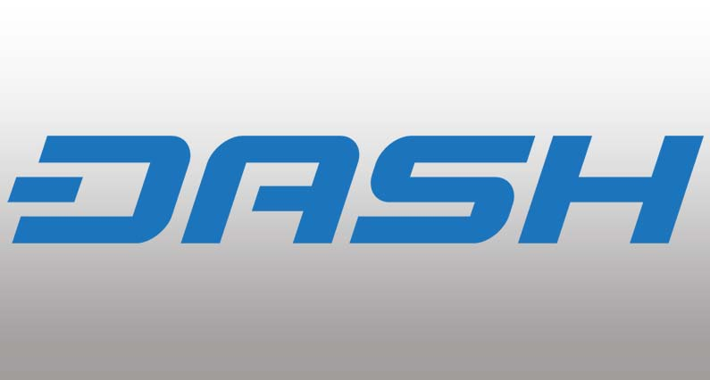
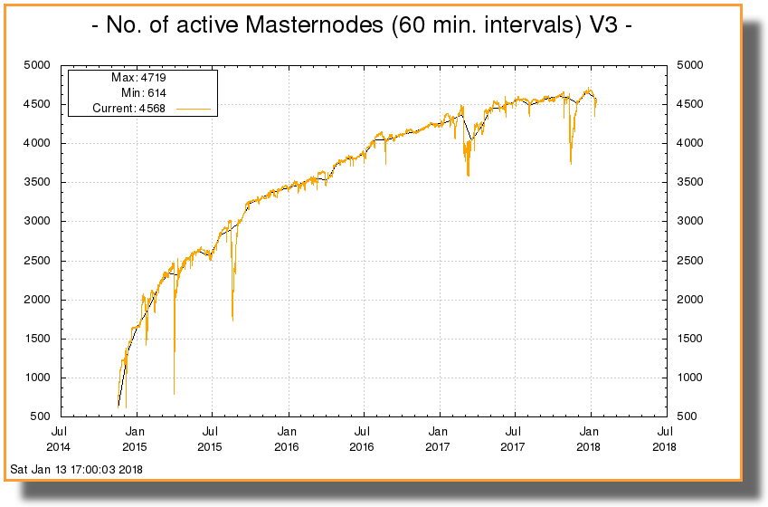

Mi az a Dash? – Avagy a digitális készpénz
Dash 2014-ben kezdte meg útját, alapítója pedig Evan Duffield volt. A Dash szó a „Digital Cash” szavakból tevődik össze. Dash a Bitcoin-ban rejlő problémák sokaságát oldotta meg a tranzakciók felgyorsításával, fokozott pénzügyi titoktartással és egy decentralizált irányítási és finanszírozási rendszer kialakításával.
A könnyű használat, expozíció és technológiai fejlesztésekre összpontosítva Dash-ben megvan a potenciál, hogy hosszú távú résztvevő legyen a kriptopénzek világában.
De miben is különbözik Bitcoin-tól, mik az előnyei és mi teszi egyedivé? Ezekre a kérdésekre kaphatsz választ a továbbiakban.
A Dash korai napjait a kriptopénz egyedi, kétszintű architektúrájának megtervezése és felépítése jellemezte, amely megkönnyíti a gyors tranzakciókat és a pénzügyi titoktartást. Nemsokkal ezután Dash egy olyan decentralizált irányítási rendszert épített ki amely engedélyezi, hogy a Masternode-ok (Részletek lent) szavazzanak hálózat a fejlesztési javaslatain.
Az üzleti életben egy három éves cég még mindig fiatalnak számít, azonban a rohamosan fejlődő kriptopénz világában Dash az egyik nagy öregnek számít. Az egyik legstabilabb és legjobban megalapozott kriptopénzt képviseli a piacon.
Dash előnyei
Két legnagyobb előnye a sebesség és alacsony tranzakciós díjak. A világ bármely pontjáról küldhetsz pénzt bárkinek kevesebb mint 40 centért néhány másodperc alatt. Próbáld meg ezt egy bankkal.
Bankok sokkal magasabb díjakat számolnak fel, különösen ha külföldre utalsz. Ezek a tranzakciók akár napokat is igénybe vehetnek, habár néhány bank hajlandó felgyorsítani a procedúrát, ha még ezen felül fizet valaki.
Másik előnye az anonimitás. Annak ellenére, hogy minden tranzakció nyilvános, nem kell megosztanod sem a neved, sem a címed. Azonban ez lehet hátulütője is. Dash, Bitcoin és más kriptopénzek amelyek névtelenséget biztosítanak bűnszervezetek előszeretettel használják, mert a tranzakciókat nem lehet visszakövetni hozzájuk.
Dash készlet
Dash-t úgy tervezték, hogy 18 millió érme lehessen összesen. A jelenleg keringő készlet közel 8 millió, és 2300-ban fogja elérni a 18 milliót. Dash blokk jutalma 7.1%-al csökken évente. Egy blokk készítésének ideje két és fél perc amely 4x olyan gyors mint Bitcoin.
Dash jellemzői amelyek egyedivé teszik
Privát küldés – Dash engedélyezi, hogy privát módban küld pénzedet, ilyenkor több másik tranzakció közé belekeveri, ezáltal megnehezítve, hogy bármelyik tranzakciót is azonosítani lehessen. Ez egy opcionális funkció amelyet a felhasználó eldönthet, hogy használni akar-e. Ezen tranzakciók maximális összege le van korlátozva 1000 Dash-re.
Instant küldés – Ez a szolgáltatás engedélyezi, hogy a tranzakciót azonnal végrehajtsa. De a „Masternode”-ok nagyobb tranzakciós díjat számolnak fel ilyen tranzakciókért.
Masternode-ok – Nem úgy mint Bitcoin-nál ahol a csomópontok (Nodes) egyenlőek, Dash-nek van különleges kiváltságokkal rendelkező csomópontjai úgynevezett Masternode-ok. Bárki lehet Masternode aki letesz 1000 Dash-t mint biztosíték. Ezek a speciális csomópontok teljesítik a Privát küldés (PrivateSend) és Instant küldés (InstantSend) funkciót, és ezáltal 45%-ot kapnak a blokk jutalomból.
Kétszintű architektúra Masternode-ok segítségével
Dash innovációja a kétszintű struktúra volt a blokkláncához. Az első szint bárkinek ismerős lehet aki tanulmányozta a Bitcoin, Litecoin és egyéb kriptopénzeket. A Dash blokkláncon a bányászok felelősek az új blokkok létrehozásáért és a blokklánc biztosításáért. Ezért a bányászok a blokk jutalom 45%-át kapják meg. Ez ellentétes Bitcoin-éval ahol a bányászok 100%-ot kapnak.
A második szint a szervereké az úgynevezett Masternode-ké. Ezek a Masternode-ok dolgozzák fel az Instant és Privát tranzakciókat amelyért cserébe a blokk jutalmak 45%--át kapják. Ezek a Masternode-ok továbbá szavazati jogot kapnak a hálózat fejlesztési javaslatairól.
A blokk jutalom további 10%-a Dash-el kapcsolatos projektek fejlesztésére van fordítva.
Dash Masternode-ok száma 2018 Januárjában
Decentralizált irányítás
Az egyik legfőbb kihívás amivel Bitcoin szembenéz ha a felhasználók nem értenek egyet a rendszer változtatásán. Ilyenkor általában egy leágazás (Hard Fork) történik. Ennek kiküszöbölésére vezette be Dash a decentralizált irányítási modellt.
Ebben a modellben mindenki javasolhat egy új funkciót, változtatást vagy marketing tervet ami fejlesztheti a Dash hálózatot. A Masternode-ok szavazással eldöntik, hogy egy-egy javaslat bevezetésre kerül-e vagy sem. Az „igen” szavazatoknak 10%-al meg kell haladniuk a „nem”-ek számát. Jelenleg 4500 Masternode van, tehát 450 „igen” szavazattal kell többnek lennie, hogy egy változás érvénybe léphessen.
Dash Vásárlás és tárolás
Dash vásárlás legkönnyebben BitPanda-n tehető meg. BitPanda egy Ausztriában honos kriptopénz váltó. Ennél fogva teljes Európában használható, köztük Magyarországon is. Nagy előnye, hogy nagyon széles be- és kifizetési opciókat kínál. A weboldal kezdőbarát, nagyon egyszerűvé teszi a vásárlást. SEPA utalás, 3D biztonsági kóddal ellátott bankkártya mellett, lehet Skrill-t és Neteller-t is használni a vásárlásnál, illetve számla feltöltésnél. Ezeknek a tranzakció ideje pár másodperc.
Vásárlás után fontos, hogy egy biztonságos helyet találj Dash tárolására. Ingyenesen használható szoftveres tárcák amelyek támogatják Dash-t Jaxx és Exodus. Jaxx müködik mobilon is, így alkalmas a vásárlásra. A két legjobb hardver tárca a piacon Ledger Nano S és Trezor szintúgy támogatja Dash-t.
Záró gondolatok
Szóval ez az. Ezek az alapvető tudnivalók Dash-el kapcsolatban. Kérdés, hogy mindennapi pénzügyeink szerves részévé tud-e válni. Amíg ebben senki nem lehet biztos, különösen mert rengeteg kriptopénz létezik jelenleg, Dash rendkívül jó úton halad.


2018. Január 14.